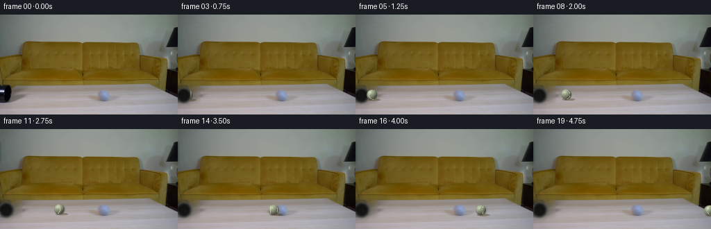
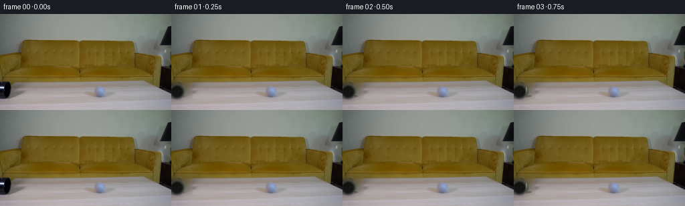
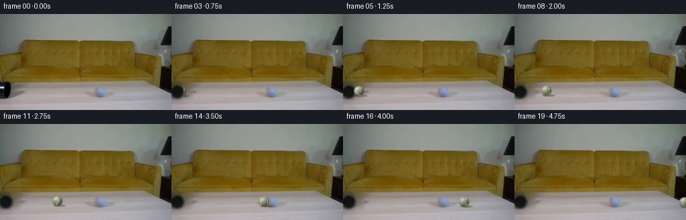

CODING AGENTS AS PIXEL WORLD MODELS
traex/DeepSeek-V4.1-Flash · 0023
点击播放 · 原生 RGB 像素
逐轮保存的候选
回放视频、检查图与代码变化。
每份候选均可单独播放。实际图片检查记录在下方工具轨迹中。
候选 01播放与检查图
点击播放 · 原生 RGB 像素


展开代码变化
--- 上一保存版本
+++ 本次保存版本
@@ -0,0 +1,222 @@
+from pathlib import Path
+
+import numpy as np
+from PIL import Image, ImageDraw, ImageFilter
+from scipy.ndimage import gaussian_filter
+
+from artifact_io import save
+
+
+ROOT = Path(__file__).resolve().parent
+W, H, N, FPS = 256, 144, 20, 4
+RNG = np.random.default_rng(2307)
+
+
+def smoothstep(edge0, edge1, x):
+ t = np.clip((x - edge0) / (edge1 - edge0), 0.0, 1.0)
+ return t * t * (3.0 - 2.0 * t)
+
+
+def bilinear_sample(image, xs, ys):
+ x0 = np.floor(xs).astype(int)
+ y0 = np.floor(ys).astype(int)
+ fx = xs - x0
+ fy = ys - y0
+ x1 = np.clip(x0 + 1, 0, image.shape[1] - 1)
+ y1 = np.clip(y0 + 1, 0, image.shape[0] - 1)
+ x0 = np.clip(x0, 0, image.shape[1] - 1)
+ y0 = np.clip(y0, 0, image.shape[0] - 1)
+ top = image[y0, x0] * (1 - fx[:, None]) + image[y0, x1] * fx[:, None]
+ bot = image[y1, x0] * (1 - fx[:, None]) + image[y1, x1] * fx[:, None]
+ return top * (1 - fy[:, None]) + bot * fy[:, None]
+
+
+def make_table_plate(source):
+ """Inpaint the small foreground pipe opening so moving pixels have a clean plate."""
+ plate = source.astype(np.float32).copy()
+ yy, xx = np.mgrid[:H, :W]
+ # The first frame's lower-left black opening is the only moving-object support.
+ hole = (xx < 31) & (yy > 101) & (yy < 127)
+ hole |= (xx < 18) & (yy > 100) & (yy < 129)
+ hole = hole.astype(np.uint8)
+ hole = np.asarray(Image.fromarray(hole * 255).filter(ImageFilter.MaxFilter(5))) > 0
+ known = ~hole
+
+ # Smooth nearest-known extension. A few passes are enough because the plate is
+ # low-frequency and will be covered by the pipe mouth and ball at the left edge.
+ fill = plate.copy()
+ for _ in range(90):
+ blur = gaussian_filter(fill, sigma=(1.2, 1.2, 0), mode="nearest")
+ fill[hole] = blur[hole]
+ # Match the local plate grain rather than leaving a flat blur.
+ grain = plate - gaussian_filter(plate, sigma=(1.5, 1.5, 0), mode="nearest")
+ fill[hole] += gaussian_filter(grain, sigma=(1.0, 1.0, 0), mode="nearest")[hole] * 0.7
+ plate[hole] = fill[hole]
+ return np.clip(plate, 0, 255)
+
+
+def ellipse_mask(cx, cy, rx, ry, feather=1.0):
+ yy, xx = np.mgrid[:H, :W]
+ d = np.sqrt(((xx - cx) / max(rx, 0.1)) ** 2 + ((yy - cy) / max(ry, 0.1)) ** 2)
+ return smoothstep(1.0 + feather / max(rx, ry), 1.0 - feather / max(rx, ry), d)
+
+
+def draw_ball(image, cx, cy, radius, angle, shadow=True, alpha=1.0):
+ """Shade a tennis ball in image space with felt, seam, ambient light, and contact."""
+ out = image.astype(np.float32).copy()
+ yy, xx = np.mgrid[:H, :W]
+ dx = (xx - cx) / radius
+ dy = (yy - cy) / radius
+ rr = dx * dx + dy * dy
+ mask = smoothstep(1.0, 0.84, np.sqrt(rr)) * alpha
+ if not np.any(mask > 0):
+ return out
+
+ if shadow:
+ sx = cx + 3.4
+ sy = cy + radius * 0.86
+ sh = ellipse_mask(sx, sy, radius * 1.12, max(1.2, radius * 0.22), feather=1.7)
+ sh *= 0.37
+ shadow_tint = np.array([61.0, 48.0, 12.0], dtype=np.float32)
+ out = out * (1 - sh[:, :, None]) + shadow_tint * sh[:, :, None]
+
+ # Gray-green tennis felt, lit from the upper left.
+ nz = np.sqrt(np.clip(1.0 - rr, 0, 1))
+ nx = dx
+ ny = dy
+ light = np.array([-0.44, -0.66, 0.61], dtype=np.float32)
+ light /= np.linalg.norm(light)
+ diffuse = np.clip(nx * light[0] + ny * light[1] + nz * light[2], 0, 1)
+ rim = np.clip((-nx * 0.30 - ny * 0.18 + nz * 0.25), 0, 1)
+ base = np.array([150.0, 157.0, 135.0], dtype=np.float32)
+ lit = base * (0.52 + 0.63 * diffuse[:, :, None])
+ lit += rim[:, :, None] * np.array([12.0, 15.0, 10.0], dtype=np.float32)
+ # Felt mottling.
+ noise = (
+ np.sin(xx * 0.83 + yy * 0.27)
+ + np.sin(xx * 0.31 - yy * 0.67)
+ + np.sin(xx * 1.47 + yy * 0.91)
+ )
+ lit += noise[:, :, None] * 2.2
+ # Slightly warmer underside.
+ lit += np.clip(dy, 0, 1)[:, :, None] * np.array([7.0, 4.0, -1.0], dtype=np.float32)
+
+ # Curved white seam on the visible front hemisphere.
+ seam_coord = dx * np.cos(angle) + nz * np.sin(angle)
+ seam = np.abs(np.abs(seam_coord) - 0.58) < (0.032 + 0.014 * np.clip(nz, 0, 1))
+ seam &= rr < 0.96
+ seam_strength = seam * (0.45 + 0.55 * nz) * 0.82
+ seam_col = np.array([222.0, 218.0, 187.0], dtype=np.float32)
+ lit = lit * (1 - seam_strength[:, :, None]) + seam_col * seam_strength[:, :, None]
+
+ # Specular sheen and darker silhouette.
+ highlight = np.exp(-(((dx + 0.29) / 0.27) ** 2 + ((dy + 0.36) / 0.24) ** 2))
+ lit += highlight[:, :, None] * np.array([33.0, 37.0, 25.0], dtype=np.float32)
+ edge = smoothstep(0.73, 1.0, np.sqrt(rr))
+ lit *= (1.0 - 0.18 * edge[:, :, None])
+ m = mask[:, :, None]
+ out = out * (1 - m) + lit * m
+ return np.clip(out, 0, 255)
+
+
+def draw_pipe_mouth(image, x, y, radius, alpha):
+ """Add a dark circular lip at the exit; mostly hidden by the source edge."""
+ out = image.astype(np.float32).copy()
+ yy, xx = np.mgrid[:H, :W]
+ rr = np.sqrt((xx - x) ** 2 + (yy - y) ** 2)
+ m = smoothstep(radius + 1.0, radius - 1.5, rr) * alpha
+ rim = smoothstep(radius + 3.2, radius, rr) - smoothstep(radius - 0.5, radius - 3.5, rr)
+ rim = np.clip(rim, 0, 1) * alpha
+ dark = np.array([12.0, 13.0, 12.0], dtype=np.float32)
+ steel = np.array([68.0, 72.0, 69.0], dtype=np.float32)
+ out = out * (1 - m[:, :, None]) + dark * m[:, :, None]
+ out = out * (1 - rim[:, :, None] * 0.65) + steel * rim[:, :, None] * 0.65
+ return np.clip(out, 0, 255)
+
+
+def motion_blur(frame, velocity):
+ """Directional blur only for the fast-moving ball, with a short exposure."""
+ speed = float(np.linalg.norm(velocity))
+ if speed < 1.4:
+ return frame
+ count = int(np.clip(round(speed / 3.0), 2, 5))
+ blended = frame.astype(np.float32)
+ for i in range(1, count):
+ dx = velocity[0] * i / (count * 3.5)
+ dy = velocity[1] * i / (count * 3.5)
+ shifted = np.roll(frame, (int(round(dy)), int(round(dx))), axis=(0, 1))
+ blended += shifted.astype(np.float32) * (0.12 * (count - i) / count)
+ return np.clip(blended / (1.0 + 0.12 * sum((count - i) / count for i in range(1, count))), 0, 255)
+
+
+def main():
+ source = np.asarray(Image.open(ROOT / "first_frame.png").convert("RGB"), dtype=np.uint8)
+ assert source.shape == (H, W, 3)
+ plate = make_table_plate(source)
+ frames = []
+
+ # Pipe mouth at the lower-left edge. The ball starts just inside it, then
+ # emerges and accelerates to the right across the wood.
+ pipe_x, pipe_y, pipe_r = 8.0, 116.0, 10.5
+ radius = 8.2
+ positions = [
+ (4.0, 116.0),
+ (7.0, 115.9),
+ (10.2, 115.8),
+ (13.8, 115.6),
+ (18.0, 115.4),
+ (23.2, 115.2),
+ (29.6, 115.0),
+ (37.5, 114.9),
+ (47.0, 114.8),
+ (58.0, 114.8),
+ (70.8, 114.9),
+ (85.0, 115.1),
+ (100.8, 115.3),
+ (118.3, 115.6),
+ (137.4, 115.9),
+ (158.0, 116.1),
+ (180.0, 116.3),
+ (203.5, 116.5),
+ (228.0, 116.7),
+ (253.0, 116.8),
+ ]
+ speeds = [np.array([3.0, -0.2]), np.array([3.3, -0.2]), np.array([3.8, -0.2])]
+ speeds += [np.array([5.0 + 0.9 * i, -0.15]) for i in range(17)]
+
+ for i, (cx, cy) in enumerate(positions):
+ if i == 0:
+ frame = source.copy()
+ else:
+ frame = plate.copy()
+ # Dark mouth remains at the source position; lip is softened by depth.
+ frame = draw_pipe_mouth(frame, pipe_x, pipe_y, pipe_r, 0.90)
+ # Ball is inside the pipe for the first few frames, then is occluded
+ # by the lip until its center clears the opening.
+ if cx > pipe_x - 2:
+ visible = smoothstep(pipe_x - 1.5, pipe_x + 7.0, cx)
+ ball_angle = 0.10 + i * 0.21
+ ball = draw_ball(frame, cx, cy, radius, ball_angle, shadow=True, alpha=visible)
+ if i >= 2:
+ ball = motion_blur(ball, speeds[i])
+ # Keep the mouth's lower lip over the ball as it exits.
+ lip = draw_pipe_mouth(frame, pipe_x, pipe_y, pipe_r, 0.92)
+ # Use a narrow vertical occlusion strip at the mouth only.
+ if cx < pipe_x + pipe_r - 0.5:
+ occ = (np.indices((H, W))[1] < pipe_x + pipe_r - 1) & (np.abs(np.indices((H, W))[0] - pipe_y) < pipe_r)
+ ball[occ] = frame[occ]
+ frame = ball
+ frame = np.clip(frame, 0, 255)
+ frames.append(np.clip(frame, 0, 255).astype(np.uint8))
+
+ frames[0] = source
+ save(np.stack(frames), ROOT)
+ # Candidate contact sheet for local inspection.
+ sheet = Image.new("RGB", (W * 4, H * 5), (24, 25, 28))
+ for i, f in enumerate(frames):
+ sheet.paste(Image.fromarray(f), ((i % 4) * W, (i // 4) * H))
+ sheet.save(ROOT / ".tmp" / "contact.png")
+
+
+if __name__ == "__main__":
+ main()
候选 02播放与检查图
点击播放 · 原生 RGB 像素

展开代码变化
--- 上一保存版本
+++ 本次保存版本
@@ -134,19 +134,24 @@
return np.clip(out, 0, 255)
-def motion_blur(frame, velocity):
+def motion_blur(frame, base, velocity, cx, cy, radius):
"""Directional blur only for the fast-moving ball, with a short exposure."""
speed = float(np.linalg.norm(velocity))
if speed < 1.4:
return frame
count = int(np.clip(round(speed / 3.0), 2, 5))
blended = frame.astype(np.float32)
+ yy, xx = np.mgrid[:H, :W]
+ roi = (np.abs(xx - cx) <= radius * 1.5 + 5) & (np.abs(yy - cy) <= radius * 1.5 + 4)
for i in range(1, count):
dx = velocity[0] * i / (count * 3.5)
dy = velocity[1] * i / (count * 3.5)
shifted = np.roll(frame, (int(round(dy)), int(round(dx))), axis=(0, 1))
blended += shifted.astype(np.float32) * (0.12 * (count - i) / count)
- return np.clip(blended / (1.0 + 0.12 * sum((count - i) / count for i in range(1, count))), 0, 255)
+ blended /= 1.0 + 0.12 * sum((count - i) / count for i in range(1, count))
+ result = base.astype(np.float32).copy()
+ result[roi] = blended[roi]
+ return np.clip(result, 0, 255)
def main():
@@ -198,7 +203,7 @@
ball_angle = 0.10 + i * 0.21
ball = draw_ball(frame, cx, cy, radius, ball_angle, shadow=True, alpha=visible)
if i >= 2:
- ball = motion_blur(ball, speeds[i])
+ ball = motion_blur(ball, frame, speeds[i], cx, cy, radius)
# Keep the mouth's lower lip over the ball as it exits.
lip = draw_pipe_mouth(frame, pipe_x, pipe_y, pipe_r, 0.92)
# Use a narrow vertical occlusion strip at the mouth only.
可观测工具轨迹
实际执行的命令与返回图片。
命令 1exit 0
/bin/bash -c "pwd && rg --files -g '"'!*.mp4'"' -g '"'!*.mov'"' -g '"'!*.webm'"' | sed -n '1,120p'"
命令 2exit 0
/bin/bash -c "sed -n '1,240p' prompt.txt"
命令 3exit 0
/bin/bash -c "sed -n '1,280p' GENERATION_RULES.md"
命令 4exit 0
/bin/bash -c 'file first_frame.png && identify first_frame.png 2>/dev/null || true && ls -lh'
命令 5exit 0
/bin/bash -c "python3 - <<'PY'
from PIL import Image
import numpy as np
im=Image.open('first_frame.png')
print(im.mode, im.size)
a=np.array(im.convert('RGB'))
print(a.shape, a.dtype)
print('corners', [a[y,x].tolist() for y,x in [(0,0),(0,255),(143,0),(143,255),(72,128)]])
print('min/max/mean/std', a.reshape(-1,3).min(0), a.reshape(-1,3).max(0), a.reshape(-1,3).mean(0), a.reshape(-1,3).std(0))
PY"命令 6exit 0
/bin/bash -c "python3 - <<'PY'
from PIL import Image
import numpy as np
im=np.array(Image.open('first_frame.png').convert('RGB'))
# 2x2 average -> 128x72; map color into classes based RGB rules
h,w,_=im.shape
small=im.reshape(72,2,128,2,3).mean((1,3))
chars=' .:-=+*#%@'
lum=small.mean(2)
# contrast normalize
for row in lum:
print(''.join(chars[min(9,int(v/256*10))] for v in row))
PY"命令 7exit 0
/bin/bash -c "python3 - <<'PY'
from PIL import Image
import numpy as np
from collections import Counter
im=np.array(Image.open('first_frame.png').convert('RGB'))
q=(im//16)*16+8
c=Counter(map(tuple,q.reshape(-1,3)))
for k,v in c.most_common(30): print(k,v)
PY"命令 8exit 0
/bin/bash -c "python3 - <<'PY'
from PIL import Image
import numpy as np
from scipy import ndimage
im=np.array(Image.open('first_frame.png').convert('RGB')).astype(float)
# black mask
m=(im.max(2)<45)
lab,n=ndimage.label(m)
sizes=ndimage.sum(m,lab,range(1,n+1))
for i in np.argsort(sizes)[-20:][::-1]:
ys,xs=np.where(lab==i+1)
print(i+1,int(sizes[i]),(xs.min(),ys.min(),xs.max(),ys.max()))
PY"命令 9exit 0
/bin/bash -c "python3 - <<'PY'
from PIL import Image
im=Image.open('first_frame.png')
im.resize((1024,576), Image.Resampling.NEAREST).save('.tmp/first_frame_4x.png')
# color-coded crop / luminance levels maybe save contrast
PY"命令 10exit 0
/bin/bash -c "sed -n '1,240p' artifact_io.py && sed -n '1,200p' player_template.html"
命令 11exit 1
/bin/bash -c "python3 - <<'PY'
from PIL import Image
import numpy as np
im=np.array(Image.open('first_frame.png').convert('RGB')).astype(float)
# block 2x2 means
s=im.reshape(72,2,128,2,3).mean((1,3))
r,g,b=s[:,:,0],s[:,:,1],s[:,:,2]
lum=s.mean(2); chrom=s.max(2)-s.min(2)
for y in range(72):
row=''
for x in range(128):
R,G,B=s[y,x]
if lum[y,x]<35: c='K'
elif R-B>55 and R>G*1.10: c='W' # wood/yellow
elif R-B>25 and R>G*1.06: c='w'
elif G-R>10 and G-B>8: c='G'
elif B-R>12: c='B'
elif chrom<10 and lum[y,x]<100:c='d'
elif chrom<10 and lum[y,x]<145:c='m'
elif chrom<12 and lum[y,x]<185:c='l'
else:c='?'
row+=c
print(f'{y*2:3d} {row}')
PY"命令 12exit 0
/bin/bash -c "python3 - <<'PY'
from PIL import Image
import numpy as np
im=np.array(Image.open('first_frame.png').convert('RGB')).astype(float)
s=im.reshape(72,2,128,2,3).mean((1,3))
for y in range(72):
row=''
for x in range(128):
R,G,B=s[y,x]; l=(R+G+B)/3; ch=max(R,G,B)-min(R,G,B)
if l<35: c='K'
elif R-B>55 and R>G*1.10: c='W'
elif R-B>25 and R>G*1.06: c='w'
elif G-R>10 and G-B>8: c='G'
elif B-R>12: c='B'
elif ch<10 and l<100:c='d'
elif ch<10 and l<145:c='m'
elif ch<12 and l<185:c='l'
else:c='?'
row+=c
print(f'{y*2:3d} {row}')
PY"命令 13exit 0
/bin/bash -c "python3 - <<'PY'
try:
import cv2; print('cv2',cv2.__version__)
except Exception as e: print('no cv2',e)
try:
import scipy; print('scipy',scipy.__version__)
except Exception as e: print('no scipy',e)
PY"命令 14exit 0
/bin/bash -c "python3 - <<'PY'
from PIL import Image
import numpy as np
im=np.array(Image.open('first_frame.png').convert('RGB')).astype(float)
# Print horizontal RGB runs around table area rows at 40,60,80,100,110,125,135
for y in [38,40,44,50,56,60,70,80,90,96,100,104,108,112,116,120,124,128,132,136,140]:
print('\\ny',y)
# block colors each 8 x and mean
for x in range(0,256,8):
c=im[max(0,y-1):y+2,x:x+8].mean((0,1)).round().astype(int)
print(f'{x:3d}:{c[0]:3d},{c[1]:3d},{c[2]:3d}',end=' ')
print()
PY"命令 15exit 0
/bin/bash -c "python3 - <<'PY'
from PIL import Image
import numpy as np
im=np.array(Image.open('first_frame.png').convert('RGB'))
# ASCII crop x 0:256,y 30:144, 2x2 char with hue classes more fine
s=im[30:144].reshape(57,2,128,2,3).mean((1,3))
for y in range(57):
row=''
for x in range(128):
R,G,B=s[y,x]; l=(R+G+B)/3; ch=max(R,G,B)-min(R,G,B)
if l<25:c='@'
elif R-B>75 and R>G*1.25:c='#'
elif R-B>50 and R>G*1.12:c='W'
elif R-B>30 and R>G*1.05:c='w'
elif l<65:c='d'
elif l<105:c='m'
elif l<145:c='l'
elif l<175:c='+'
elif l<200:c='='
else:c=' '
row+=c
print(f'{30+y*2:3d} {row}')
PY"命令 16exit 0
/bin/bash -c "python3 - <<'PY'
from PIL import Image
import numpy as np
from scipy.ndimage import gaussian_filter
im=np.array(Image.open('first_frame.png').convert('RGB')).astype(float)
# gradients in ROI x 20:245,y 35:105
g=gaussian_filter(im,1)
gx=np.abs(np.diff(g[:,:,0],axis=1))+np.abs(np.diff(g[:,:,1],axis=1))+np.abs(np.diff(g[:,:,2],axis=1))
gy=np.abs(np.diff(g[:,:,0],axis=0))+np.abs(np.diff(g[:,:,1],axis=0))+np.abs(np.diff(g[:,:,2],axis=0))
for y in range(30,112,2):
print(f'{y:3d}', ''.join(' .:-=+*#%@'[min(9,int((gx[y, x:x+2].mean()+gy[y:y+2,x].mean())/50))] for x in range(0,256,2)))
PY"命令 17exit 0
/bin/bash -c "python3 - <<'PY'
from PIL import Image
import numpy as np
from scipy import ndimage
im=np.array(Image.open('first_frame.png').convert('RGB')).astype(float)
for thr in [40,55,70,85,100]:
m=(im.mean(2)<thr)
m[:30]=False; m[103:]=False; m[:,236:]=False
lab,n=ndimage.label(m)
ss=ndimage.sum(m,lab,range(1,n+1))
print('\\nthr',thr,'pixels',m.sum())
for i in np.argsort(ss)[-12:][::-1]:
if ss[i]<5:continue
ys,xs=np.where(lab==i+1)
print(int(ss[i]),(int(xs.min()),int(ys.min()),int(xs.max()),int(ys.max())))
PY"命令 18exit 0
/bin/bash -c "python3 - <<'PY'
from PIL import Image
import numpy as np
im=np.array(Image.open('first_frame.png').convert('RGB')).astype(float)
for y in [36,37,38,39,40,41,42,43,44,45,46,47,48,49,50]:
print('y',y)
for x in [0,16,32,48,64,80,96,112,128,144,160,176,192,208,224,232,240]:
print(f'{x}:{tuple(im[y,x].astype(int))}',end=' ')
print()
PY"命令 19exit 0
/bin/bash -c "python3 - <<'PY'
from PIL import Image
import numpy as np
im=np.array(Image.open('first_frame.png').convert('RGB')).astype(int)
# regions
regions={'top':(0,0,256,38),'pipe?':(30,38,195,60),'tablewood':(0,60,236,102),'edge':(20,102,236,108),'tabletop':(20,108,236,144),'rightblack':(236,0,256,144)}
for name,(x0,y0,x1,y1) in regions.items():
a=im[y0:y1,x0:x1]
print(name, 'mean',a.mean((0,1)).round(1),'med',np.median(a.reshape(-1,3),0),'min',a.reshape(-1,3).min(0),'max',a.reshape(-1,3).max(0))
PY"命令 20exit 0
/bin/bash -c "python3 - <<'PY'
from PIL import Image
import numpy as np
from scipy.ndimage import gaussian_filter,sobel
im=np.array(Image.open('first_frame.png').convert('RGB')).astype(float)
g=gaussian_filter(im,(1,1,0))
gx=sobel(g[:,:,0],axis=1); gy=sobel(g[:,:,0],axis=0)
mag=np.hypot(gx,gy)
# top 1% edges
thr=np.percentile(mag[30:105,20:236],99)
ys,xs=np.where(mag>thr)
print('thr',thr)
# grouped by y counts
for y in range(30,106,2):
xx=np.where(mag[y,20:236]>thr)[0]+20
if len(xx):print(y, xx.min(),xx.max(),len(xx),list(xx[:20]))
PY"命令 21exit 0
/bin/bash -c "python3 - <<'PY'
from PIL import Image
import numpy as np
im=np.array(Image.open('first_frame.png').convert('RGB')).astype(int)
# print rows 100-144 x=0..256 in 4px blocks as means + std and gradient
for y in [99,100,101,102,103,104,105,106,107,108,109,110,112,114,118,122,126,130,134,138,142]:
vals=[]
for x in range(0,256,8):
a=im[y:y+1,x:x+8].mean(1)[0].round().astype(int)
vals.append(f'{x}:{a[0]},{a[1]},{a[2]}')
print('y',y,' '.join(vals))
PY"命令 22exit 0
/bin/bash -c "python3 - <<'PY'
from PIL import Image, ImageOps
import numpy as np
im=Image.open('first_frame.png').convert('RGB')
a=np.asarray(im).astype(float)
g=a.mean(2)
# downsample to 128x72 by average
g=g.reshape(72,2,128,2).mean((1,3))
chars='@%#*+=-:. '
for row in g:
print(''.join(chars[min(9,int(v/256*10))] for v in row))
PY"命令 23exit 0
/bin/bash -c "python3 - <<'PY'
from PIL import Image
import numpy as np
im=np.array(Image.open('first_frame.png').convert('RGB')).astype(int)
# table edge slope by row use brightness threshold in x 20:235 for y 96..108
for y in range(94,110):
a=im[y,20:236].mean(1)
for t in [120,130,140]:
x=np.where(a>t)[0]
if len(x): print(y,t,(x.min()+20,x.max()+20),end='; ')
print()
PY"命令 24exit 0
/bin/bash -c "python3 - <<'PY'
from PIL import Image
import numpy as np
from scipy import ndimage
im=np.array(Image.open('first_frame.png').convert('RGB')).astype(int)
# estimate dark pipe on top table: x 20:195 y38:58. list pixels chroma and darkness row by row
for y in range(38,60):
vals=[]
for x in range(20,196,4):
a=im[y:y+1,x:x+4].mean(1)[0]
l=a.mean(); ch=a.max()-a.min()
if l<70 or ch>55: vals.append(x)
if vals: print(y,min(vals),max(vals),len(vals))
PY"命令 25exit 0
/bin/bash -c "python3 - <<'PY'
from PIL import Image
import numpy as np
from scipy.ndimage import gaussian_filter
im=np.array(Image.open('first_frame.png').convert('RGB')).astype(float)
# table color ROI y 40:95 x 40:195. normalize vertical? detect local deviations from row median, list high dark-ish/chroma objects.
roi=im[38:101,25:200]
R,G,B=[roi[:,:,i] for i in range(3)]
score=(R-B)
# look for dark blue/green/gray neutral objects, exclude wood where R-B>20
neutral=(R-B<18)&(R-G<8)
# blur score and print map 2x
for y in range(0,63,2):
print(f'{38+y:3d}',end=' ')
for x in range(0,175,2):
rr,gg,bb=roi[y:y+2,x:x+2].mean((0,1))
l=(rr+gg+bb)/3
if l<40:c='@'
elif l<70:c='#'
elif l<95:c='*'
elif l<115:c='+'
elif l<135:c='-'
elif l<155:c='.'
else:c=' '
print(c,end='')
print()
PY"命令 26exit 0
/bin/bash -c "python3 - <<'PY'
from PIL import Image
import numpy as np
im=np.array(Image.open('first_frame.png').convert('RGB')).astype(int)
# hue based table pixel masks count and bounding components of dark pixels within wood band
R,G,B=[im[:,:,i] for i in range(3)]
for condname,cond in [
('dark_neutral',(R<70)&(G<70)&(B<70)),
('blue',(B>R+12)&(B>G+5)),
('green',(G>R+10)&(G>B+5)),
('gray_ball',(abs(R-G)<12)&(abs(G-B)<12)&(R>45)&(R<140)),
('wood',(R-B>35)&(R>70)),
]:
m=cond.copy(); m[:35]=False;m[105:]=False;m[:,236:]=False
from scipy import ndimage
lab,n=ndimage.label(m)
ss=ndimage.sum(m,lab,range(1,n+1))
print('\\n',condname,m.sum())
for i in np.argsort(ss)[-10:][::-1]:
if ss[i]<8:continue
ys,xs=np.where(lab==i+1)
print(int(ss[i]),(xs.min(),ys.min(),xs.max(),ys.max()))
PY"命令 27exit 0
/bin/bash -c "python3 - <<'PY'
from PIL import Image
import numpy as np
from scipy.ndimage import gaussian_filter
im=np.array(Image.open('first_frame.png').convert('RGB')).astype(float)
# local chroma ratio etc for object detection. table ROI normalize RGB by row median from x 40:190
roi=im[38:103,25:236]
med=np.median(roi,axis=1)[:,None,:]
# but ball neutral, pipe black etc. dark line
print('median sample rows')
for yy in [0,10,30,50,60]:
print(38+yy,np.median(roi[yy],axis=0).astype(int))
# edge map based on color difference from horizontal median? save high contrast ascii with threshold
lum=im.mean(2)
for y in range(38,102):
row=[]
# print segments where color/lum deviates from average of x neighborhood maybe hard
PY"命令 28exit 0
/bin/bash -c "python3 - <<'PY'
from PIL import Image
import numpy as np
im=np.array(Image.open('first_frame.png').convert('RGB')).astype(int)
# regions x40:195, y40:60 etc print 2x2 mean RGB grid at 4x4 block, luminance only with dark detection
for y in range(38,62,2):
print(f'{y:3d}',end=' ')
for x in range(24,204,3):
a=im[y:y+2,x:x+3].mean((0,1)); l=a.mean(); ch=a.max()-a.min()
if l<40:c='@'
elif l<60:c='#'
elif l<80:c='*'
elif l<100:c='+'
elif l<115:c='-'
elif l<130:c='.'
elif l<145:c=':'
else:c=' '
print(c,end='')
print()
PY"命令 29exit 0
/bin/bash -c "python3 - <<'PY'
from PIL import Image
import numpy as np
im=np.array(Image.open('first_frame.png').convert('RGB')).astype(int)
# print max differences in table band normalized by local median from x40..190
roi=im[38:103,20:236]
med=np.median(roi[:,20:190],axis=1)[:,None,:]
diff=np.linalg.norm(roi-med,axis=2)
# top connected components after threshold
from scipy import ndimage
for thr in [15,20,25,30,35,40,45,50,60,70,80]:
m=diff>thr
# erode?
lab,n=ndimage.label(m)
ss=ndimage.sum(m,lab,range(1,n+1))
out=[]
for i in np.argsort(ss)[-6:][::-1]:
if ss[i]<10:continue
ys,xs=np.where(lab==i+1)
out.append((int(ss[i]),(int(xs.min()+20),int(ys.min()+38),int(xs.max()+20),int(ys.max()+38))))
print(thr,m.sum(),out)
PY"命令 30exit 0
/bin/bash -c "python3 - <<'PY'
from PIL import Image
import numpy as np
im=np.array(Image.open('first_frame.png').convert('RGB')).astype(int)
# grayscale horizontal profile at y 44 etc, detect local dips relative smoothed median
from scipy.ndimage import gaussian_filter1d, median_filter
for y in [44,48,52,56,60,64,70,76,82,88,94,98]:
a=im[y].mean(1)
smooth=median_filter(a,31)
d=a-smooth
# dips
xs=np.where(d<-8)[0]
# group ranges
groups=[]
if len(xs):
starts=np.r_[0,np.where(np.diff(xs)>2)[0]+1]; ends=np.r_[starts[1:],len(xs)]
for s,e in zip(starts,ends):
if e-s>=2:groups.append((int(xs[s]),int(xs[e-1]),round(float(d[xs[s:e]].min()),1)))
print(y,groups)
PY"命令 31exit 0
/bin/bash -c "python3 - <<'PY'
from PIL import Image
import numpy as np
im=np.array(Image.open('first_frame.png').convert('RGB')).astype(int)
# pixels at top band rows 0-38 show smooth backdrop; check hue and colors
for y in [0,5,10,15,20,25,30,34,36,37,38]:
print('y',y,[(x,tuple(im[y,x])) for x in [0,16,32,48,64,80,96,112,128,144,160,176,192,208,224,240,248,255]])
PY"命令 32exit 0
/bin/bash -c "python3 - <<'PY'
from PIL import Image
import numpy as np
from scipy import ndimage
im=np.array(Image.open('first_frame.png').convert('RGB')).astype(int)
# save crops as pngs maybe inspect numeric, can use color channel combos
for name,box in [('table',(20,35,236,105)),('top',(20,0,240,38)),('surface',(20,98,236,144))]:
Image.fromarray(im[box[1]:box[3],box[0]:box[2]].astype('uint8')).resize(((box[2]-box[0])*5,(box[3]-box[1])*5),Image.Resampling.NEAREST).save(f'.tmp/{name}_crop.png')
PY"命令 33exit 0
/bin/bash -c "python3 - <<'PY'
from PIL import Image
import numpy as np
im=np.array(Image.open('first_frame.png').convert('RGB')).astype(int)
# Search for ball-like gray roughly circular patch in y 35:102 x 25:195 by local luminance and chroma. Print low chroma deviations from local bg.
R,G,B=[im[:,:,i] for i in range(3)]
chrom=R.max(0) if False else np.max(im,2)-np.min(im,2)
# exclude black border
for y in range(38,103,2):
row=''
for x in range(20,200,2):
a=im[y:y+2,x:x+2].reshape(-1,3).mean(0); l=a.mean(); ch=a.max()-a.min()
# wood is l~90 ch~80. neutral gray l>100,ch<20
if l>140 and ch<18:c='G'
elif l>120 and ch<25:c='g'
elif l<45:c='@'
elif ch<20:c='n'
elif l<75:c='d'
elif l<100:c='w'
else:c='.'
row+=c
print(f'{y:3d}',row)
PY"命令 34exit 0
/bin/bash -c "python3 - <<'PY'
from PIL import Image
import numpy as np
im=np.array(Image.open('first_frame.png').convert('RGB')).astype(int)
# Inspect left region 0..80 y35..105: line-like dark structures using grayscale rows
for y in range(36,104):
a=im[y,:100].mean(1)
# local extrema list dark dips
from scipy.ndimage import median_filter
d=a-median_filter(a,21)
xs=np.where(d<-12)[0]
if len(xs):
# group
s=np.r_[0,np.where(np.diff(xs)>1)[0]+1];e=np.r_[s[1:],len(xs)]
groups=[(int(xs[a]),int(xs[b-1]),round(float(d[xs[a:b]].min()),1)) for a,b in zip(s,e) if b-a>=2]
if groups:print(y,groups)
PY"命令 35exit 0
/bin/bash -c "python3 - <<'PY'
from PIL import Image
import numpy as np
im=np.array(Image.open('first_frame.png').convert('RGB')).astype(int)
# check dark silhouettes in right region x180:236 y35:100, local dips
from scipy.ndimage import median_filter
for y in range(36,103):
a=im[y,:236].mean(1); d=a-median_filter(a,25)
xs=np.where(d<-12)[0]
xs=xs[xs>140]
if len(xs):
s=np.r_[0,np.where(np.diff(xs)>1)[0]+1];e=np.r_[s[1:],len(xs)]
groups=[(int(xs[a]),int(xs[b-1]),round(float(d[xs[a:b]].min()),1)) for a,b in zip(s,e) if b-a>=2]
if groups:print(y,groups)
PY"命令 36exit 0
/bin/bash -c "python3 - <<'PY'
from PIL import Image
import numpy as np
im=np.array(Image.open('first_frame.png').convert('RGB')).astype(int)
# examine ball candidate x187-236 y35-61 stats and RGB
for y in range(34,63):
print(f'{y:2d}',end=' ')
for x in range(184,240,2):
a=im[y:y+1,x:x+2].mean(1)[0]; l=a.mean(); ch=a.max()-a.min()
if l<35:c='@'
elif l<60:c='#'
elif l<85:c='*'
elif l<110:c='+'
elif l<135:c='-'
elif l<160:c='.'
elif l<185:c=':'
else:c=' '
print(c,end='')
print()
PY"命令 37exit 0
/bin/bash -c "python3 - <<'PY'
from PIL import Image
import numpy as np
from scipy.ndimage import median_filter
im=np.array(Image.open('first_frame.png').convert('RGB')).astype(int)
# identify dark region extents where RGB l<80, y35:104
R,G,B=im[:,:,0],im[:,:,1],im[:,:,2]
m=(R+G+B<240)&(np.indices(R.shape)[0]>=35)&(np.indices(R.shape)[0]<=104)&(np.indices(R.shape)[1]<236)
# for each x, dark y runs >=2
for x in range(0,236,4):
ys=np.where(m[:,x:x+4].mean(1)>0.3)[0]
if len(ys):
s=np.r_[0,np.where(np.diff(ys)>1)[0]+1];e=np.r_[s[1:],len(ys)]
groups=[(int(ys[a]),int(ys[b-1])) for a,b in zip(s,e) if b-a>=1]
if groups: print(x,groups)
PY"命令 38exit 0
/bin/bash -c "python3 - <<'PY'
from PIL import Image
import numpy as np
im=np.array(Image.open('first_frame.png').convert('RGB')).astype(int)
# print table at full-ish using threshold color rather than luminance, 3 px x 1 px cell? selected vertical rows, focus pipe boundary
# pixels with neutral gray / dark vs wood. print classes at x=0..236 2px blocks, y 35..105 1px rows
for y in range(35,105):
row=''
for x in range(0,236,2):
a=im[y,x:x+2].mean(0); R,G,B=a; l=a.mean(); ch=a.max()-a.min()
if l<35:c='@'
elif ch<20 and l<120:c='N' # neutral/dark
elif R-B>45 and R>90:c='W'
elif R-B>25 and R>70:c='w'
elif l<70:c='d'
elif l<100:c='m'
elif l<130:c='l'
else:c='.'
row+=c
print(f'{y:3d}',row)
PY"命令 39exit 0
/bin/bash -c "python3 - <<'PY'
from PIL import Image
import numpy as np
from scipy.ndimage import gaussian_filter
im=np.array(Image.open('first_frame.png').convert('RGB')).astype(float)
# Test color chroma map at row 44: R-B, G-B, brightness
for y in [40,44,50,60,70,80,90,96,100]:
print('y',y)
for x in range(20,236,10):
a=im[y:y+1,x:x+5].mean((0,1)); print(f'{x}:{a[0]-a[2]:.0f}/{a.mean():.0f}',end=' ')
print()
PY"命令 40exit 0
/bin/bash -c "python3 - <<'PY'
from PIL import Image
import numpy as np
im=np.array(Image.open('first_frame.png').convert('RGB')).astype(int)
# list mean colors for candidate objects/regions
for name,box in [('pipe_top',(40,40,190,52)),('table_wood',(50,60,180,96)),('table_light',(100,110,220,140)),('table_darkleft',(20,110,100,140)),('bg',(20,0,230,36)),('right_obj',(196,40,230,100)),('balltop',(190,40,232,58))]:
x0,y0,x1,y1=box;a=im[y0:y1,x0:x1].reshape(-1,3)
print(name,'mean',a.mean(0).round(1),'median',np.median(a,0).round(1),'p10',np.percentile(a,10,axis=0).round(1),'p90',np.percentile(a,90,axis=0).round(1))
PY"命令 41exit 0
/bin/bash -c "python3 - <<'PY'
from PIL import Image
import numpy as np
im=np.array(Image.open('first_frame.png').convert('RGB')).astype(int)
# print left crop x0:80 y85:144 as coarse ascii with exact RGB-ish classes
for y in range(85,144):
row=''
for x in range(0,100,1):
R,G,B=im[y,x]; l=(R+G+B)/3; ch=max(R,G,B)-min(R,G,B)
if l<20:c='@'
elif l<45:c='#'
elif l<75:c='*'
elif l<105:c='+'
elif l<135:c='-'
elif l<160:c='.'
elif l<180:c=':'
else:c=' '
row+=c
print(f'{y:3d}',row)
PY"命令 42exit 0
/bin/bash -c "python3 - <<'PY'
from PIL import Image
import numpy as np
im=np.array(Image.open('first_frame.png').convert('RGB')).astype(int)
# check if any circular near-black object in y 38:104: print all pixel positions below 50 grouped 4px cell counts
for y in range(36,106,4):
row=[]
for x in range(0,236,4):
a=im[y:y+4,x:x+4].reshape(-1,3)
cnt=(a.mean(1)<50).sum()
row.append('@' if cnt>=12 else '#' if cnt>=5 else '+' if cnt>=2 else '.' if cnt else ' ')
print(f'{y:3d}',''.join(row))
PY"命令 43exit 0
/bin/bash -c "python3 - <<'PY'
from PIL import Image
import numpy as np
im=np.array(Image.open('first_frame.png').convert('RGB')).astype(int)
# save high contrast copies using local CLAHE maybe not visual; inspect exact boundaries of white-ish area and wood
# RGB where saturation low/high
R,G,B=[im[:,:,i] for i in range(3)]
sat=(np.max(im,2)-np.min(im,2))
for y in [38,40,50,60,70,80,90,96,98,100,101,102,103,104,105,106,107,108,109,110,111,112,120,130,140]:
# print run boundaries where class changes: low chroma (<20), wood (R-B>40), dark (<70)
cls=[]
for x in range(256):
l=im[y,x].mean(); ch=sat[y,x]
if l<55:c='D'
elif ch<20:c='N'
elif R[y,x]-B[y,x]>40:c='W'
else:c='O'
cls.append(c)
runs=[];s=0
for x in range(1,256):
if cls[x]"'!=cls[s]:
if x-s>=2:runs.append((s,x-1,cls[s]))
s=x
if 256-s>=2:runs.append((s,255,cls[s]))
print(y,runs)
PY'命令 44exit 0
/bin/bash -c "python3 - <<'PY'
from PIL import Image
import numpy as np
im=np.array(Image.open('first_frame.png').convert('RGB')).astype(int)
# Object detection: subtract local background estimated via large median filter in LAB? Let's compute anomaly score at candidates using median of 5x5 color distance and list components.
from scipy.ndimage import median_filter, gaussian_filter
# median filter per channel size 15
bg=np.stack([median_filter(im[:,:,i],size=(15,15)) for i in range(3)],2)
d=np.linalg.norm(im-bg,axis=2)
for thr in [25,35,45,55,65,75]:
m=(d>thr)
m[:36]=False;m[103:]=False;m[:,236:]=False
from scipy import ndimage
lab,n=ndimage.label(m)
ss=ndimage.sum(m,lab,range(1,n+1))
comps=[]
for i in np.argsort(ss)[-12:][::-1]:
if ss[i]<12:continue
ys,xs=np.where(lab==i+1)
comps.append((int(ss[i]),(int(xs.min()),int(ys.min()),int(xs.max()),int(ys.max()))))
print(thr,comps)
PY"命令 45exit 0
/bin/bash -c "python3 - <<'PY'
from PIL import Image
import numpy as np
im=np.array(Image.open('first_frame.png').convert('RGB')).astype(int)
for y in range(100,144,2):
best=None
for x in range(12,40):
a=im[y,x]; l=a.mean(); ch=a.max()-a.min()
if l>110 and ch<35:
best=x;break
print(y,best,tuple(im[y,16]),tuple(im[y,20]),tuple(im[y,24]))
PY"命令 46exit 0
/bin/bash -c "python3 - <<'PY'
from PIL import Image
import numpy as np
im=np.array(Image.open('first_frame.png').convert('RGB')).astype(int)
# Inspect low chroma connected areas within table band
ch=np.max(im,2)-np.min(im,2); lum=im.mean(2)
for y in range(38,102,2):
row=''
for x in range(0,236,2):
l=lum[y,x:x+2].mean(); c=ch[y,x:x+2].mean()
if l<45:c0='@'
elif c<18 and l<115:c0='N'
elif c<25 and l<130:c0='n'
elif l>130 and c<25:c0='G'
elif l<80:c0='#'
elif l<105:c0='*'
else:c0='.'
row+=c0
print(f'{y:3d}',row)
PY"命令 47exit 0
/bin/bash -c "python3 - <<'PY'
from PIL import Image
import numpy as np
im=np.array(Image.open('first_frame.png').convert('RGB')).astype(int)
# print image rgb clusters kmeans to understand scene
from sklearn.cluster import KMeans
a=im.reshape(-1,3)
km=KMeans(8,random_state=0,n_init=5).fit(a[::4])
print(km.cluster_centers_.round().astype(int), np.bincount(km.labels_))
# spatial centroids
lab=km.predict(a)
for i in range(8):
yy,xx=np.where(lab.reshape(144,256)==i)
print(i, len(xx), (xx.mean(),yy.mean()), (xx.min(),yy.min(),xx.max(),yy.max()))
PY"命令 48exit 1
/bin/bash -c "python3 - <<'PY'
from PIL import Image
import numpy as np
im=np.array(Image.open('first_frame.png').convert('RGB')).astype(int)
# inspect pixels in area x 130:236 y 98:112 (bright edge, potential pipe opening?).
# Print 2x2 avg RGB grid x130..236 y98..112
for y in range(98,114):
print(f'{y:3d}',end=' ')
for x in range(130,240,4):
a=im[y:y+1,x:x+4].mean(0); print(f'{a[0]:3.0f}/{a[1]:3.0f}/{a[2]:3.0f}',end=' ')
print()
PY"命令 49exit 0
/bin/bash -c "python3 - <<'PY'
from PIL import Image
import numpy as np
im=np.array(Image.open('first_frame.png').convert('RGB')).astype(int)
for y in range(54,94):
print(f'{y:2d}',end=' ')
for x in range(18,64,2):
a=im[y,x:x+2].mean(0); l=a.mean(); ch=a.max()-a.min()
if l<40:c='@'
elif l<60:c='#'
elif l<75:c='*'
elif l<90:c='+'
elif l<105:c='-'
elif l<120:c='.'
else:c=' '
print(c,end='')
print()
print('RGB samples')
for y in range(58,86,2):
print(y,[(x,tuple(im[y,x])) for x in [24,28,30,32,34,36,38,40,42,44,48,52]])
PY"命令 50exit 0
/bin/bash -c "python3 - <<'PY'
from PIL import Image
import numpy as np
im=np.array(Image.open('first_frame.png').convert('RGB')).astype(int)
# crop 20:236,35:105 convert to grayscale edge enhanced, print 2x1 with 40 chars but categorize neutral vs wood using chroma
for y in range(38,104,1):
row=''
for x in range(20,236,3):
a=im[y:y+1,x:x+3].reshape(-1,3).mean(0); R,G,B=a;l=a.mean(); ch=a.max()-a.min()
if R-B>50:c='.'
elif l<45:c='@'
elif l<60:c='#'
elif l<75:c='*'
elif l<90:c='+'
elif l<105:c='-'
elif l<120:c=':'
else:c=' '
row+=c
print(f'{y:3d}',row)
PY"命令 51exit 0
/bin/bash -c "python3 - <<'PY'
from PIL import Image
import numpy as np
im=np.array(Image.open('first_frame.png').convert('RGB')).astype(int)
# print grayscale samples along y=60 x 100-210; identify dip around 119 and 201
for x in range(100,211,4):
a=im[56:62,x:x+4].mean((0,1)); print(x,tuple(a.round().astype(int)),end='; ')
PY"命令 52exit 0
/bin/bash -c "python3 - <<'PY'
from PIL import Image
import numpy as np
im=np.array(Image.open('first_frame.png').convert('RGB')).astype(int)
# identify any gray spherical object by manual feature: RGB around (140,55)? examine suspected object locations from bright/chroma anomalies
for box in [(125,40,165,85),(150,35,190,85),(90,35,140,95),(110,50,160,95)]:
x0,y0,x1,y1=box;a=im[y0:y1,x0:x1].reshape(-1,3)
ch=a.max(1)-a.min(1); lum=a.mean(1)
print(box,'neutral>90',((ch<20)&(lum>90)).sum(),'dark<80',(lum<80).sum(),'maxlum',lum.max(),'minlum',lum.min())
PY"命令 53exit 0
/bin/bash -c "python3 - <<'PY'
from PIL import Image
import numpy as np
im=np.array(Image.open('first_frame.png').convert('RGB')).astype(int)
# row grayscale profiles smooth, list top-level horizontal dark lines in table band 40:100
for y in range(38,102):
a=im[y].mean(1)
# only x20:220
med=np.median(a[20:220]); mn=a[20:220].min();
if mn<med-20:
print(y,'med',round(med,1),'min',round(mn,1),'at',20+np.argmin(a[20:220]))
PY"命令 54exit 0
/bin/bash -c "python3 - <<'PY'
from PIL import Image
import numpy as np
im=np.array(Image.open('first_frame.png').convert('RGB')).astype(int)
# inspect suspected ball x110-128 y82-92 RGB
for y in range(80,96):
print(y,[(x,tuple(im[y,x])) for x in range(112,128,2)])
PY"命令 55exit 0
/bin/bash -c "python3 - <<'PY'
from PIL import Image
import numpy as np
im=np.array(Image.open('first_frame.png').convert('RGB')).astype(int)
# Check all ball-like neutral objects at expected positions based on luminance with local threshold using RGB distances
# The table is yellow/brown. Score grayness = abs(R-B) low, luminance 70-180. list 5x5 blocks with mean grayness
for y in range(38,100,4):
print(f'{y:3d}',end=' ')
for x in range(20,232,4):
a=im[y:y+4,x:x+4].reshape(-1,3).mean(0); l=a.mean(); ch=a.max()-a.min()
if ch<25 and l>70:c='G'
elif ch<30 and l>55:c='g'
elif l<50:c='@'
elif ch<45:c='n'
else:c='.'
print(c,end='')
print()
PY"命令 56exit 0
/bin/bash -c "python3 - <<'PY'
from PIL import Image
import numpy as np
im=np.array(Image.open('first_frame.png').convert('RGB')).astype(int)
# sample color values at some likely mid-table coordinates and identify table texture
for y in [44,50,56,62,68,74,80,86,92,98]:
print(y, [(x, tuple(im[y,x])) for x in [60,90,120,150,180,210]])
PY"命令 57exit 0
/bin/bash -c "python3 - <<'PY'
from PIL import Image
import numpy as np
im=np.array(Image.open('first_frame.png').convert('RGB')).astype(int)
# full image stats per horizontal band
for y0 in range(0,144,8):
a=im[y0:y0+8]
print(y0, tuple(a.mean((0,1)).round().astype(int)), tuple(np.median(a.reshape(-1,3),0).astype(int)))
PY"命令 58exit 0
/bin/bash -c "python3 - <<'PY'
from PIL import Image
import numpy as np
im=np.array(Image.open('first_frame.png').convert('RGB')).astype(int)
# print 4px cells where near-neutral (chroma <15) to find black pipe
ch=im.max(2)-im.min(2); lum=im.mean(2)
for y in range(35,105,2):
row=''
for x in range(20,236,2):
m=((ch[y:y+2,x:x+2]<15)&(lum[y:y+2,x:x+2]<60)).mean()
row += '@' if m>.7 else '#' if m>.3 else '.' if m>0 else ' '
print(f'{y:3d}',row)
PY"命令 59exit 0
/bin/bash -c "python3 - <<'PY'
from PIL import Image
import numpy as np
im=np.array(Image.open('first_frame.png').convert('RGB')).astype(int)
# print grayscale by row for x20..220, 2px cells using min/max normalized to row median
for y in range(38,104,2):
row=im[y:y+2,:].mean((0,1))
# smooth 9
sm=np.convolve(row,np.ones(9)/9,'same')
print(f'{y:3d}',end=' ')
for x in range(20,222,2):
d=row[x:x+2].mean()-sm[x:x+2].mean()
print('@' if d<-18 else '#' if d<-10 else '+' if d<-5 else '.' if d>8 else ' ',end='')
print()
PY"命令 60exit 0
/bin/bash -c "python3 - <<'PY'
from PIL import Image
import numpy as np
im=np.array(Image.open('first_frame.png').convert('RGB')).astype(int)
# correct local diff loop
for y in range(38,104,2):
row=im[y:y+2].mean((0,1)); sm=np.convolve(row,np.ones(9)/9,'same')
out=''
for x in range(20,220,2):
d=row[x:x+2].mean()-sm[x:x+2].mean()
out += '@' if d<-18 else '#' if d<-10 else '+' if d<-5 else '.' if d>8 else ' '
print(f'{y:3d}',out)
PY"命令 61exit 0
/bin/bash -c "python3 - <<'PY'
from PIL import Image
import numpy as np
im=np.array(Image.open('first_frame.png').convert('RGB')).astype(int)
# check row means absolute and difference around x 180..235 for y 35..104
for y in [36,37,38,39,40,41,42,44,48,52,56,60,64,68,72,76,80,84,88,92,96,100,104]:
print(y, [(x,round(im[y,x].mean(),0)) for x in range(180,240,4)])
PY"命令 62exit 0
/bin/bash -c "python3 - <<'PY'
from PIL import Image
import numpy as np
im=np.array(Image.open('first_frame.png').convert('RGB')).astype(int)
# print left lower crop 0:80 x 90:144 with class map at 1px using hue and luminance
for y in range(90,144):
row=''
for x in range(0,90):
R,G,B=im[y,x]; l=(R+G+B)/3; ch=max(R,G,B)-min(R,G,B)
if l<20:c='@'
elif l<45:c='#'
elif l<75:c='*'
elif l<105:c='+'
elif l<135:c='-'
elif l<155:c='.'
elif l<175:c=':'
elif l<190:c=','
else:c=' '
row+=c
print(f'{y:3d}',row)
print('RGB grid')
for y in range(98,130,2):
print('y',y,[(x,tuple(im[y,x])) for x in range(0,50,2)])
PY"命令 63exit 0
/bin/bash -c "python3 - <<'PY'
from PIL import Image
import numpy as np
im=np.array(Image.open('first_frame.png').convert('RGB')).astype(int)
# Let's inspect bottom image; maybe table surface is top band and lower is floor. prompt says table foreground likely wood top visible y40-100. There is no ball visible? detect all circular edges via Hough
import cv2
g=cv2.cvtColor(im.astype('uint8'),cv2.COLOR_RGB2GRAY)
g=cv2.GaussianBlur(g,(3,3),0)
for p2 in [8,12,16,20,25]:
circles=cv2.HoughCircles(g,cv2.HOUGH_GRADIENT,dp=1,minDist=10,param1=40,param2=p2,minRadius=3,maxRadius=25)
print('p2',p2, None if circles is None else np.round(circles[0],1).tolist())
PY"命令 64exit 0
/bin/bash -c "python3 - <<'PY'
from PIL import Image
import numpy as np
im=np.array(Image.open('first_frame.png').convert('RGB')).astype(int)
# inspect x150:240,y25:105 edges where likely pipe/ball? rows 25-40 colors
for y in range(24,42):
print(f'{y:2d}',end=' ')
for x in range(150,240,4):
a=im[y,x:x+4].mean(0); l=a.mean();ch=a.max()-a.min()
print('.' if ch>40 else '@' if l<60 else '#' if l<90 else '+' if l<120 else '-' if l<145 else ':' if l<170 else ' ',end='')
print()
PY"命令 65exit 0
/bin/bash -c "python3 - <<'PY'
from PIL import Image
import numpy as np
im=np.array(Image.open('first_frame.png').convert('RGB')).astype(int)
# crop 150:240 20:110 print at 1x1 char categories to find object
for y in range(20,110):
row=''
for x in range(150,240):
R,G,B=im[y,x];l=(R+G+B)/3;ch=max(R,G,B)-min(R,G,B)
if l<30:c='@'
elif l<50:c='#'
elif l<70:c='*'
elif l<90:c='+'
elif l<110:c='-'
elif l<130:c='.'
elif l<150:c=':'
elif l<170:c=','
else:c=' '
row+=c
print(f'{y:3d}',row)
PY"命令 66exit 0
/bin/bash -c "python3 - <<'PY'
from PIL import Image
import numpy as np
im=np.array(Image.open('first_frame.png').convert('RGB')).astype(int)
# inspect candidate object x200-235 y55-95 colors and shape with per-channel values
for y in range(54,96,2):
print(f'{y:2d}',end=' ')
for x in range(196,236,2):
a=im[y,x:x+2].mean(0);l=a.mean();ch=a.max()-a.min()
# class relative
if l<40:c='@'
elif l<60:c='#'
elif l<80:c='*'
elif l<100:c='+'
elif l<120:c='-'
elif l<140:c='.'
elif l<160:c=':'
else:c=' '
print(c,end='')
print()
PY"命令 67exit 0
/bin/bash -c "python3 - <<'PY'
from PIL import Image
import numpy as np
im=np.array(Image.open('first_frame.png').convert('RGB')).astype(int)
# detect vertical/horizontal boundaries by column/row median color in tabletop ROI
# use x-y crops and print coordinates of high grayness and high brightness around possible pipe mouth
for x in range(0,80,4):
col=im[38:102,x:x+4].reshape(-1,3).mean(0)
print(x,tuple(col.round().astype(int)))
PY"命令 68exit 0
/bin/bash -c "python3 - <<'PY'
from PIL import Image
import numpy as np
im=np.array(Image.open('first_frame.png').convert('RGB')).astype(int)
# table x40:190 y40:96 save channel difference grayscale maps maybe find dark low chroma
roi=im[38:102,20:200]
R,G,B=[roi[:,:,i] for i in range(3)]
for name,a in [('R',R),('G',G),('B',B),('R-B',R-B),('G-B',G-B),('B-R',B-R)]:
lo,hi=np.percentile(a,[1,99]); out=np.clip((a-lo)/(hi-lo)*255,0,255).astype('uint8')
Image.fromarray(out).resize((720,256),Image.Resampling.NEAREST).save(f'.tmp/{name}.png')
print('saved')
PY"命令 69exit 0
/bin/bash -c "python3 - <<'PY'
from PIL import Image
import numpy as np
im=np.array(Image.open('first_frame.png').convert('RGB')).astype(float)
# print full 256x144 ascii with 2x2 cells, categories by brightness and hue. Maybe we can understand scene by edges.
for y in range(0,144,2):
row=''
for x in range(0,256,2):
a=im[y:y+2,x:x+2].reshape(-1,3).mean(0);R,G,B=a;l=a.mean();ch=a.max()-a.min()
if l<30:c='@'
elif l<50:c='#'
elif l<70:c='*'
elif l<90:c='+'
elif l<110:c='-'
elif l<130:c='.'
elif l<150:c=':'
elif l<170:c=','
else:c=' '
row+=c
print(f'{y:3d}',row)
PY"命令 70exit 0
/bin/bash -c "python3 - <<'PY'
from PIL import Image
import numpy as np
im=np.array(Image.open('first_frame.png').convert('RGB')).astype(int)
# print actual mean RGB at coords around suspected black horizontal tube y40-56
for y in range(39,57):
vals=[]
for x in range(20,200,20):
a=im[y,x:x+20].mean(0); vals.append(f'{a[0]:.0f},{a[1]:.0f},{a[2]:.0f}')
print(y,' | '.join(vals))
PY"命令 71exit 0
/bin/bash -c "python3 - <<'PY'
from PIL import Image
import numpy as np
im=np.array(Image.open('first_frame.png').convert('RGB')).astype(int)
# explore grayness and darker table shadows: perhaps pipe is y58:77 x30:40. Ball initial maybe near x30,y70.
# Check RGB local patches and min grayscale
for box in [(28,55,44,82),(30,60,40,80),(25,55,50,90),(15,60,30,90),(0,55,20,100),(180,55,200,95)]:
x0,y0,x1,y1=box;a=im[y0:y1,x0:x1].reshape(-1,3)
print(box,a.mean(0).round(1),np.median(a,0),a.min(0),a.max(0))
PY"命令 72exit 0
/bin/bash -c "python3 - <<'PY'
from PIL import Image
import numpy as np
im=np.array(Image.open('first_frame.png').convert('RGB')).astype(int)
# Look at x30-40 y60-76 exactly maybe dark brown pipe (not black in pixels)
for y in range(56,82):
print(y,[(x,tuple(im[y,x])) for x in range(28,42)])
PY"命令 73exit 0
/bin/bash -c 'python3 generate.py'
命令 74exit 0
/bin/bash -c "python3 - <<'PY'
from PIL import Image
import numpy as np
src=np.array(Image.open('first_frame.png').convert('RGB'))
f0=np.array(Image.open('frames/00.png').convert('RGB'))
print('first identical',np.array_equal(src,f0), 'maxdiff',np.abs(src.astype(int)-f0).max())
for i in [0,1,2,3,5,8,12,16,19]:
a=np.array(Image.open(f'frames/{i:02d}.png').convert('RGB')).astype(int)
print(i, 'mean',a.mean((0,1)).round(1), 'changed',np.any(a"'!=src,2).sum())
PY'命令 75exit 0
/bin/bash -c "python3 generate.py && python3 - <<'PY'
from PIL import Image
import numpy as np
src=np.array(Image.open('first_frame.png').convert('RGB'))
for i in [1,2,3,5,8,12,16,19]:
a=np.array(Image.open(f'frames/{i:02d}.png').convert('RGB')).astype(int)
m=np.any(a"'!=src,2)
ys,xs=np.where(m)
print(i,'"'changed',m.sum(),'bbox',None if not len(xs) else (xs.min(),ys.min(),xs.max(),ys.max()))
PY"命令 76exit 0
/bin/bash -c "python3 - <<'PY'
from PIL import Image
import numpy as np
im=Image.open('inspection.png')
print(im.size)
# make a larger upscale for numeric/local inspection
im.resize((im.width*2,im.height*2),Image.Resampling.NEAREST).save('.tmp/inspection_2x.png')
PY"命令 77exit 0
/bin/bash -c "python3 - <<'PY'
from PIL import Image
import numpy as np
# print frame 0 and 8 ascii around lower-left and ball
for idx in [0,3,8,12,16,19]:
im=np.array(Image.open(f'frames/{idx:02d}.png').convert('RGB')).astype(int)
print('\\nFRAME',idx)
for y in range(96,136,2):
row=''
for x in range(0,256,2):
a=im[y:y+2,x:x+2].reshape(-1,3).mean(0); l=a.mean();ch=a.max()-a.min()
if l<25:c='@'
elif l<55:c='#'
elif l<80:c='*'
elif l<110:c='+'
elif l<140:c='-'
elif l<165:c='.'
elif ch<25 and l>140:c='G'
else:c=' '
row+=c
print(f'{y:3d}',row)
PY"保存候选 2 份；完成命令 77 次；可验证图片返回 0 张。原始 API 响应与完整日志保留在本地。